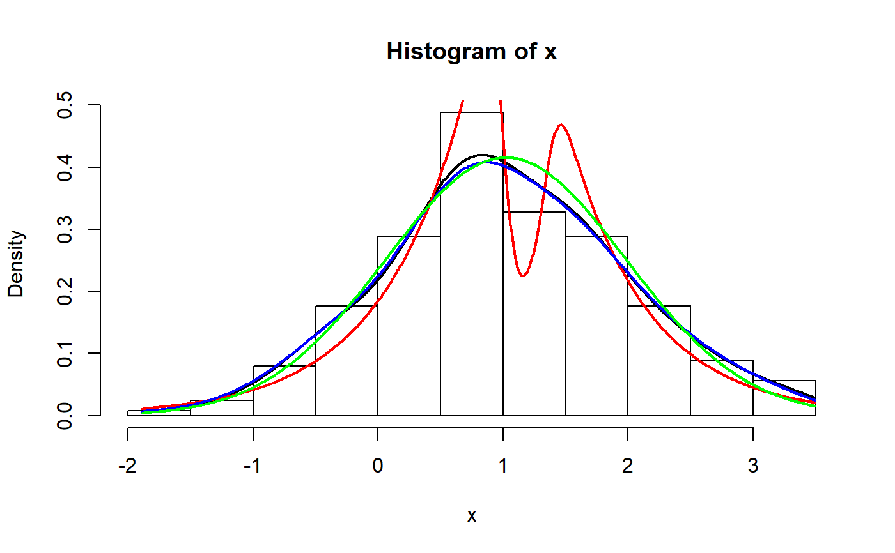
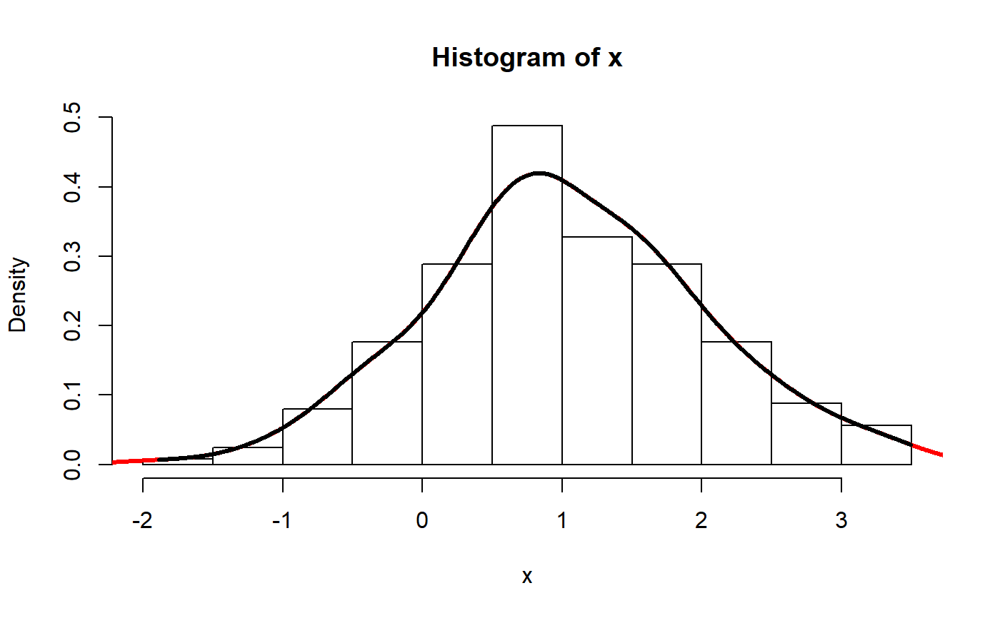

This function is a wrapper over different methods of density estimation. By default, it uses the base R density with by default uses a different smoothing bandwidth ("SJ") from the legacy default implemented the base R density function ("nrd0"). However, Deng \& Wickham suggest that method = "KernSmooth" is the fastest and the most accurate.
estimate_density(x, method = "kernel", precision = 2^10, extend = FALSE, extend_scale = 0.1, bw = "SJ", ...)
| x | the data from which the estimate is to be computed. For the default method a numeric vector: long vectors are not supported. |
|---|---|
| method | Method of density estimation. Can be |
| precision | Number of points of density data. See the |
| extend | Extend the range of the x axis by a factor of |
| extend_scale | Ratio of range by which to extend the x axis. A value of |
| bw | the smoothing bandwidth to be used. The kernels are scaled such that this is the standard deviation of the smoothing kernel. (Note this differs from the reference books cited below, and from S-PLUS.)
The specified (or computed) value of |
| ... | further arguments for (non-default) methods. |
Deng, H., \& Wickham, H. (2011). Density estimation in R. Electronic publication.
library(bayestestR) x <- rnorm(250, 1) # Methods density_kernel <- estimate_density(x, method = "kernel") density_logspline <- estimate_density(x, method = "logspline") density_KernSmooth <- estimate_density(x, method = "KernSmooth")#># Extension density_extended <- estimate_density(x, extend = TRUE) density_default <- estimate_density(x, extend = FALSE) hist(x, prob = TRUE)